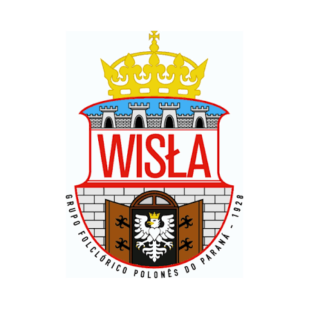

Meu primeiro post: Vou falar sobre dicas e preparos para ensaiar
Agora vou dar umas dicas para fazer os passos perfeitamente: Abaixe o Centro de Gravidade nos GirosDanças como o Oberek exigem giros extremamente rápidos em casal.
Para não perder o equilíbrio ou ser levado pela força centrífuga, dobre levemente os joelhos e jogue o peso do corpo para baixo. Isso fixa você no chão e dá mais estabilidade.
Sincronia Total no Sapateado (Tupanie)Os batidos de pé poloneses devem soar uníssonos, como se o grupo inteiro fosse um único instrumento de percussão.
Treine a batida usando a planta inteira do pé (e não apenas o calcanhar) para emitir um som mais cheio, seco e limpo.
Foco no "Olhar de Par" nas Danças de SalãoEm danças como o Kujawiak e a Polonaise, a conexão visual com seu par e com o restante do grupo é fundamental Polonaise, dança tradicional polonesa. ]
Não olhe para o chão; mantenha o queixo erguido e direcione o olhar para quem dança com você para transmitir a narrativa da coreografia.
Cuidados com o Corpo e TrajesPrepare o Fôlego para a AlturaMuitas coreografias polonesas misturam cantos (enquanto você corre pelo palco) com saltos acrobáticos.
Inclua treinos de cardio (como corrida ou corda) na sua rotina fora dos ensaios.
O folclore polonês exige a resistência física de um atleta.
Mantenha os Sapatos de Dança (Kierpce ou Botas) Bem AjustadosSapatos folclóricos poloneses de couro tendem a lacear com o tempo.
Use meias grossas de algodão para evitar bolhas causadas pelo atrito nos saltos e certifique-se de que os amarradores de couro (kierpce da região dos Tatras) estejam bem firmes no tornozelo para evitar torções. .
Meu segundo post: Agora vou falar de um grupo folclorico polones de curitiba
Grupo Wisla
O pioneiro mundial: É o grupo folclórico polonês mais antigo do mundo em atividade contínua.
Origem em Curitiba: Fundado em 1928 pelo professor Tadeusz Morozowicz na capital do Paraná.
Alta honraria estatal: Recebeu da Polônia a prestigiada Comenda Oskar Kolberg por mérito cultural.
Estrutura gigante: Reúne mais de 140 integrantes divididos entre categorias infantil, juvenil, adulto e sênior.
Destaque nos palcos: É premiado no Festival de Joinville e brilha anualmente no Teatro Guaíra
O Wisła se diferencia por não usar apenas músicas gravadas; as apresentações de grande porte contam com uma orquestra folclórica e coral próprios.
Repertório Clássico: O repertório inclui canções folclóricas das regiões montanhosas, como o ritmo enérgico de Góral Żywiecki.
Ópera e Folclore: Incorporam composições eruditas nacionais ao espetáculo, como a famosa melodia de Mazurka, que faz parte da clássica Ópera Halka do compositor polonês Stanisław Moniuszko.

Meu tercero post: Vou falar sobre os trajes
Roupa Branca (Base)
Blusas e camisas: Feitas de algodão ou linho branco com mangas bem bufantes.
Detalhes: Golas, peitos e punhos decorados com rendas finas ou bordados delicados.
Roupa Feminina
Saias: Rodadas, longas e pesadas, com estampas florais vibrantes ou listras coloridas.
Coletes: Feitos de veludo escuro, justos ao corpo e decorados com lantejoulas e fitas.
Aventais: Peças sobrepostas às saias, geralmente de renda branca ou com barras decoradas.
Roupa Masculina
Calças: Modelos listrados em vermelho e branco ou calças de lã branca com bordados escuros.
Casacos: Coletes longos de lã ou casacos azul-escuro com botões decorativos.
Cintos: Faixas de couro bem largas com fivelas de metal trabalhadas.
Adereços
Para a cabeça: Coroas de flores com fitas longas (solteiras), lenços amarrados (casadas) ou chapéus masculinos com penas de pavão.
Calçados: Botas de couro preto de cano alto para homens e mulheres.
Joias: Colares de contas vermelhas marcantes (imitando corais) usados pelas mulheres.
Meu quarto post: Vou falar sobre as três principais festas polonesas
Dożynki: Tradicional festa da colheita celebrada em março na Colônia Murici (São José dos Pinhais), marcada por desfiles de tratores enfeitados, missa solene e almoço com pierogi.
Święconka: Benção pascal dos alimentos no Sábado de Aleluia no Bosque Papa João Paulo II (Curitiba), onde famílias levam cestas decoradas com ovos pintados (pisanki), pães e embutidos.
Polski Festiwal: Grande festival cultural e gastronômico que ocorre em agosto em Araucária, reunindo dezenas de grupos folclóricos, artesanato e pratos típicos como o bigos.
Meu quinto post: Vou falar um pouco sobre a historia do folclore polones
Criação de grandes companhias: No século XX, o governo polonês profissionalizou o folclore com grandes grupos estatais (como o Mazowsze e Śląsk), que rodaram o mundo.
Preservação no Brasil: Trazido pelos imigrantes no século XIX, o folclore polonês fincou raízes fortes no Paraná, mantendo vivas tradições que até na própria Polônia mudaram.
Resistência cultural: Durante os séculos de invasões e divisões do território polonês, o folclore foi a principal ferramenta para manter viva a identidade do país.
Por : Vitoria Galvao
Boas vindas ao meu novo blog! Aqui vou compartilhar dicas de passos de ballet e curiodidades do folclore polones